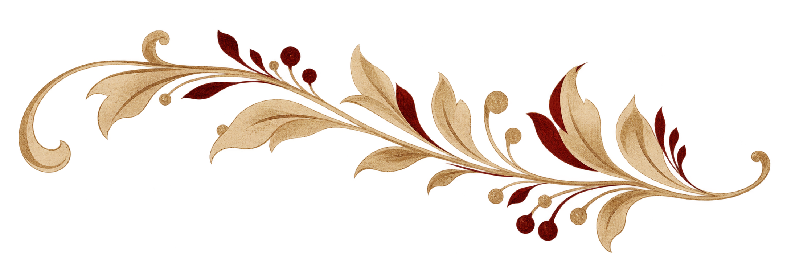
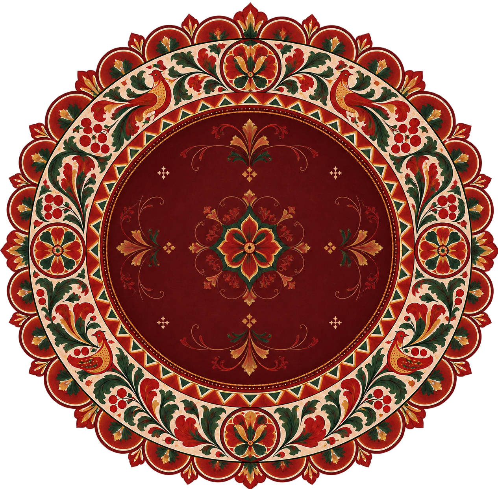

Культурный DIY
Сохраняйтрадиции,создавая новое
Идеи, мастер-классы и вдохновение
из культур народов России
для твоих творческих проектов
Откройте для себя
Популярные разделы

Что хотите создать?
Выберите настроение, технику или просто начните с того, что хочется сделать сегодня.
Ничего не нашли. Попробуйте другой запрос или раздел.